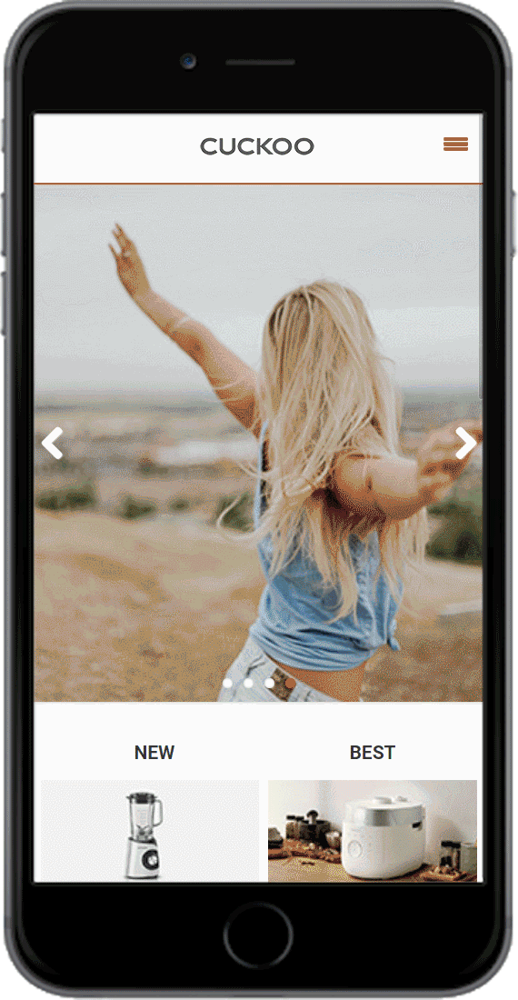
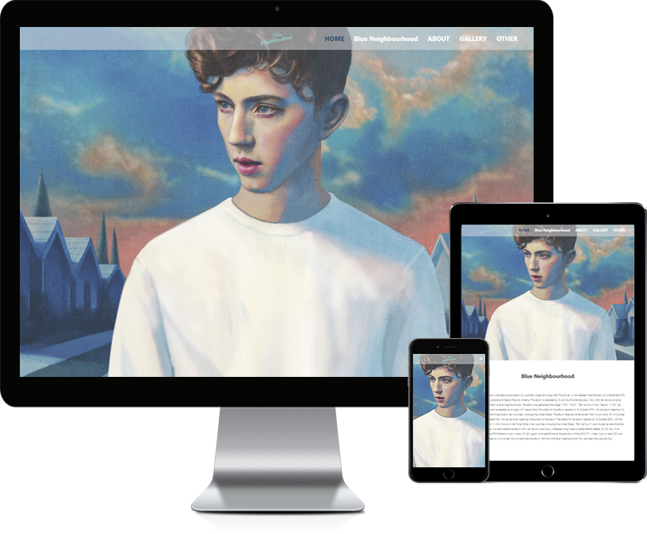
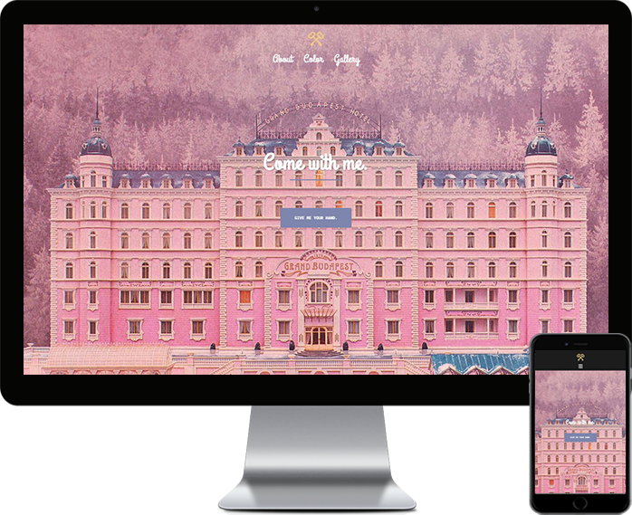

Lim Se Hwa
Web Publisher & Front-end Developer
임세화 (林世花)
Web Publisher / Front-end Developer- Birth
- 2001.03.05
- Call
- 010-8465-9494
- gdshee@naver.com
- Skills (Develop)
- HTML5, CSS3, Sass/Less, JavaScript, jQuery, php, MySQL
- Skills (Design)
- Adobe Photoshop, illustrator

PC WEB
기존 쿠쿠 웹사이트의 산만한 Interface, Image Alt 누락으로 인한 접근성 부재를 문제점으로 삼아 트렌드에 맞는 UI와 웹 표준을 지향하는 마크업으로 접근성을 고려하여 새롭게 구축하였습니다.
- 제작 기간
- 약 4주
- 제작 스킬
- HTML5, CSS3, Javascript, jQuery, MySQL, php (회원가입, 로그인, 로그아웃, 이미지 게시판), W3C 웹표준 마크업 검사, 웹접근성(K-WAH), 크로스브라우징 완료

Mobile WEB
메인화면에서 사용자가 원하는 경험을 중심으로 퀵메뉴를 구분하고, 컨텐츠의 기능과 성격에 맞춰 위계를 재정렬한 모바일 버전입니다.
- 제작 기간
- 약 3주
- 제작 스킬
- Adobe Photoshop, HTML5, Javascript, jQuery, MySQL, php (회원가입, 로그인, 로그아웃), CSS3(media query)와 스크립트를 이용한 기기별 해상도 서비스, 대표 기기별 테스트 완료

Responsive WEB
영화 Mad Max를 주제로 다양한 디바이스에서 폭 넓게 이용할 수 있도록 반응형 웹을 구축하였습니다.
- 제작 기간
- 약 2주
- 제작 스킬
- Adobe Photoshop, HTML5, Javascript, jQuery, CSS3(media query)와 스크립트를 이용한 디바이스/해상도별 반응형 UI 구현, 대표 기기별 테스트 완료

BootStrap WEB
가수 Troye Sivan의 앨범 Blue Neighbourhood를 주제로 다양한 디바이스에서 폭 넓게 이용할 수 있도록 반응형 웹을 부트스트랩을 사용해 구축하였습니다.
- 제작 기간
- 약 4일
- 제작 스킬
- Adobe Photoshop, Javascript, jQuery, HTML5, CSS3, Sass/Less, bootstrap plug-in을 이용한 웹사이트 구현, 대표 기기별 테스트 완료

WordPress WEB
영화 Grand Budapest Hotel을 주제로 다양한 디바이스에서 폭 넓게 이용할 수 있도록 반응형 웹을 워드프레스를 사용해 구축하였습니다.
- 제작 기간
- 약 4일
- 제작 스킬
- Adobe Photoshop, Word Pres 테마 Sydney 사용, Word Pres plug-in을 이용한 웹사이트 구현, 대표 기기별 테스트 완료